Baseline gap widened
0.128 → 2.211X-driven 和 Lancet ETS 在 2024 的差距很小，但到 2050 已拉开到 2.21 个点，说明真正主导两版差异的是 baseline 生成方式。
这版不再把页面做成“先切选项再自己找结论”的仪表盘，而是按真正的阅读顺序重排： 先讲最关键的判断，再把两种 baseline 的全国结果摆在一起，然后往下看地区、再看省级，最后才回到稳健性和方法来源。 页面里所有已产出的主要图件都直接展开，不需要另外打开文件。
如果你只想抓结论，先看“Key Judgements”和“全国结果”。如果你在写结果部分，再继续往下看地区和省级空间格局。
当前 SSP 情景真正进入未来路径的协变量只有 R1xday；因此两种 baseline 的情景增量几乎相同，主要差异来自 baseline 水平本身。
主模型、低 VIF、systematic、strict FE 不是四个装饰性标签，而是四套不同历史系数。因为未来只让 R1xday 变动，所以 R1xday 系数大小直接决定了情景敏感度。
X-driven 和 Lancet ETS 在 2024 的差距很小，但到 2050 已拉开到 2.21 个点，说明真正主导两版差异的是 baseline 生成方式。
主模型下，SSP5-8.5 与 SSP1-1.9 的 2050 national delta spread 为 0.129，两种 baseline 完全一致。
SSP5-8.5 下最高的是 华南，最低的是 华中 -0.63。
SSP5-8.5 下最高是 浙江，最低是 河南，最大双情景 gap 在 海南。
这四条是当前这版结果里最值得先说清的事实。它们决定了后面怎么解释全国曲线、怎么解释空间差异，也决定了应该把哪一版 baseline 放主分析、哪一版放扩展分析。
X-driven 比 Lancet ETS 在 2050 高出 2.211 个点，而两者在 2024 只差 0.128。这说明两版最大的差别不是情景增量，而是 baseline 怎么延伸到 2050。
主模型下，SSP5-8.5 与 SSP1-1.9 的 national delta spread 只有 0.129。这意味着当前由 R1xday 驱动的 SSP 分歧存在，但没有大到压过 baseline 趋势。
SSP5-8.5 下，地区层面最高是 华南 +1.61，最低是 华中 -0.63。全国平均掩盖了明显的区域分化。
SSP5-8.5 下省级抬升最高是 浙江，最低是 河南；而 SSP5-8.5 与 SSP1-1.9 的最大 gap 出现在 海南。
两种 baseline 共享同一套历史 FE 系数、同一套未来 R1xday 情景和同一套全国平均口径。它们唯一真正不同的地方，是“未来 baseline 到底由什么生成”。
这版最贴近 Lancet 2023 的表述：baseline scenario continued at current rates, as estimated by ETS models。它更强调结果变量自身历史惯性。
这版更接近“由未来协变量路径驱动未来结果”的解释框架。它不是完整的 Nature Medicine 时空贝叶斯模型，但逻辑上更靠近 X-driven baseline。
下面先把两版的全国主图和全国补充图完整展开，再给出 2050 年双 baseline 的并列表。这样可以同时看水平、增量、排序和不确定性。
2050 baseline 从 30.79 下降到 27.21， 变化 -3.58。到 2050 年，情景最低是 SSP1-1.9 (27.36)，最高是 SSP5-8.5 (27.49)，两者相差 0.129。
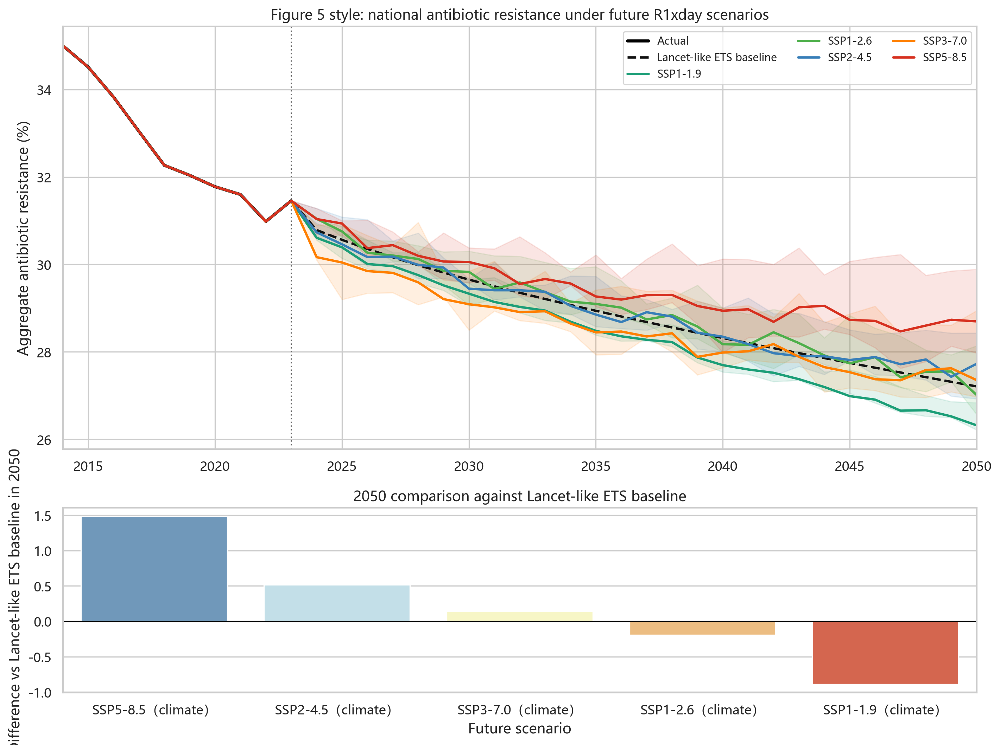
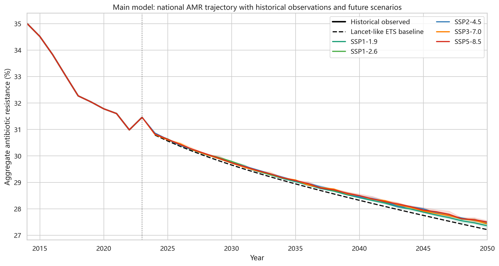
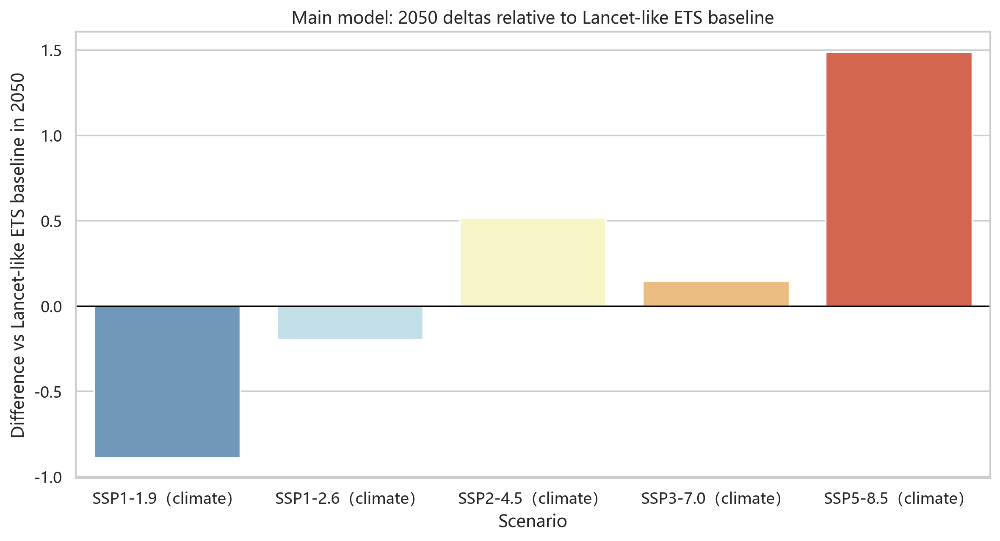
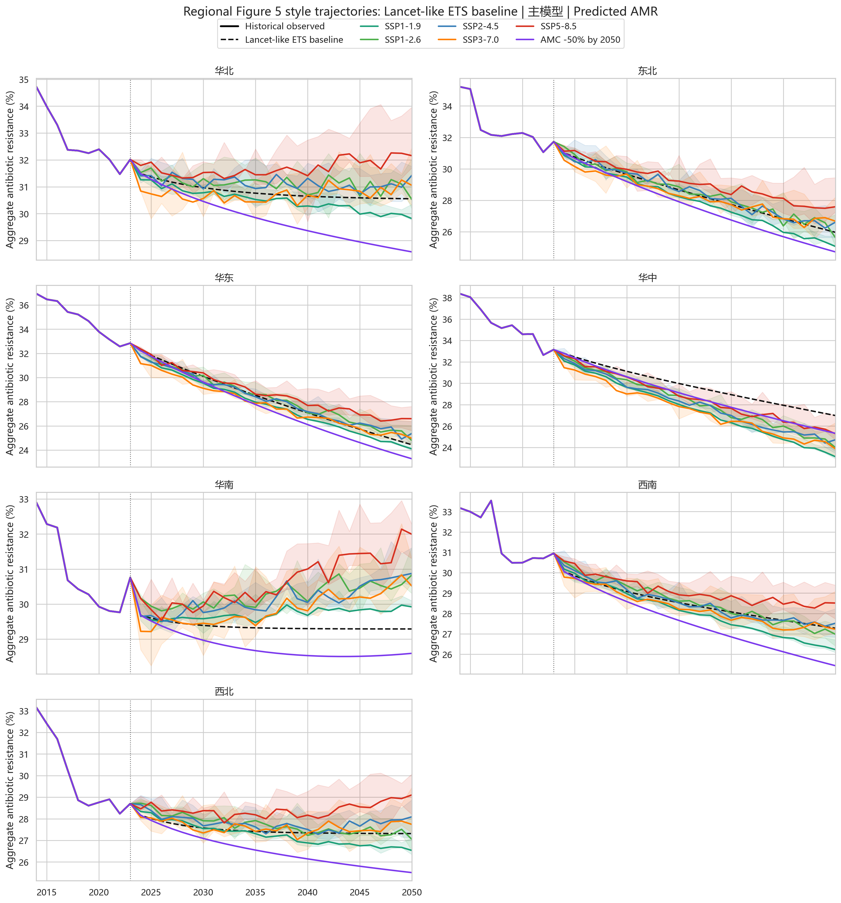
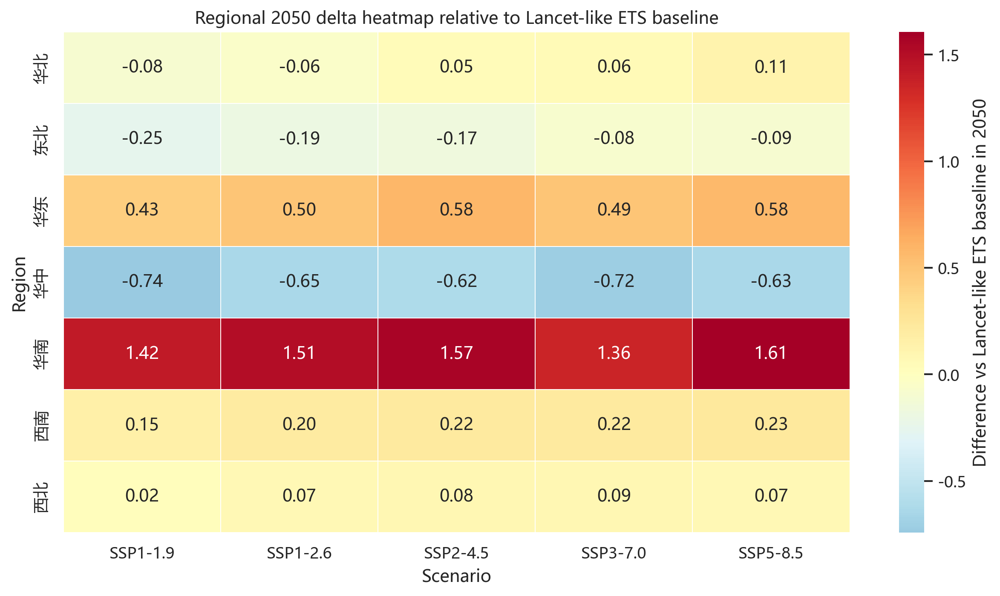
| Region | SSP1-1.9 Δ | SSP5-8.5 Δ | SSP5-8.5 predicted | Province n |
|---|---|---|---|---|
| 华中 Central China |
-0.74 | -0.63 | 26.35 | 3 |
| 东北 Northeast China |
-0.25 | -0.09 | 25.87 | 3 |
| 华北 North China |
-0.08 | +0.07 | 27.39 | 5 |
| 西北 Northwest China |
+0.02 | +0.11 | 30.66 | 5 |
| 西南 Southwest China |
+0.15 | +0.23 | 27.51 | 5 |
| 华东 East China |
+0.43 | +0.58 | 25.02 | 7 |
| 华南 South China |
+1.42 | +1.61 | 30.90 | 3 |

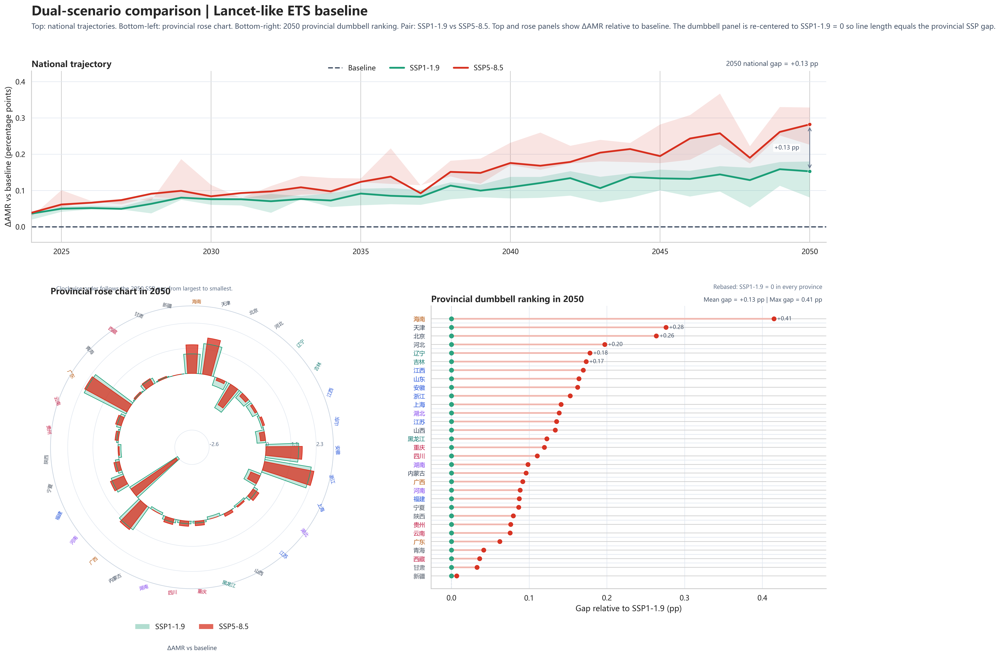
| Province | Region | 2050 predicted | Δ vs baseline | rx1day Δ |
|---|---|---|---|---|
| 浙江 | 华东 | 22.70 | +2.28 | +76.61 |
| 广东 | 华南 | 32.41 | +2.18 | +73.28 |
| 天津 | 华北 | 30.51 | +1.65 | +55.53 |
| 安徽 | 华东 | 21.57 | +1.65 | +55.34 |
| 广西 | 华南 | 31.77 | +1.34 | +44.89 |
| 海南 | 华南 | 28.51 | +1.30 | +43.57 |
| 福建 | 华东 | 22.54 | +0.66 | +22.06 |
| 湖北 | 华中 | 30.13 | +0.33 | +10.91 |
| Province | Region | SSP1-1.9 | SSP5-8.5 | Gap |
|---|---|---|---|---|
| 海南 | 华南 | +0.88 | +1.30 | +0.41 |
| 天津 | 华北 | +1.38 | +1.65 | +0.28 |
| 北京 | 华北 | -0.39 | -0.13 | +0.26 |
| 河北 | 华北 | -1.28 | -1.09 | +0.20 |
| 辽宁 | 东北 | -0.36 | -0.18 | +0.18 |
| 吉林 | 东北 | -0.28 | -0.10 | +0.17 |
| 江西 | 华东 | -0.08 | +0.09 | +0.17 |
| 山东 | 华东 | -0.40 | -0.23 | +0.16 |
2050 baseline 从 30.91 下降到 29.42， 变化 -1.49。到 2050 年，情景最低是 SSP1-1.9 (29.57)，最高是 SSP5-8.5 (29.70)，两者相差 0.129。
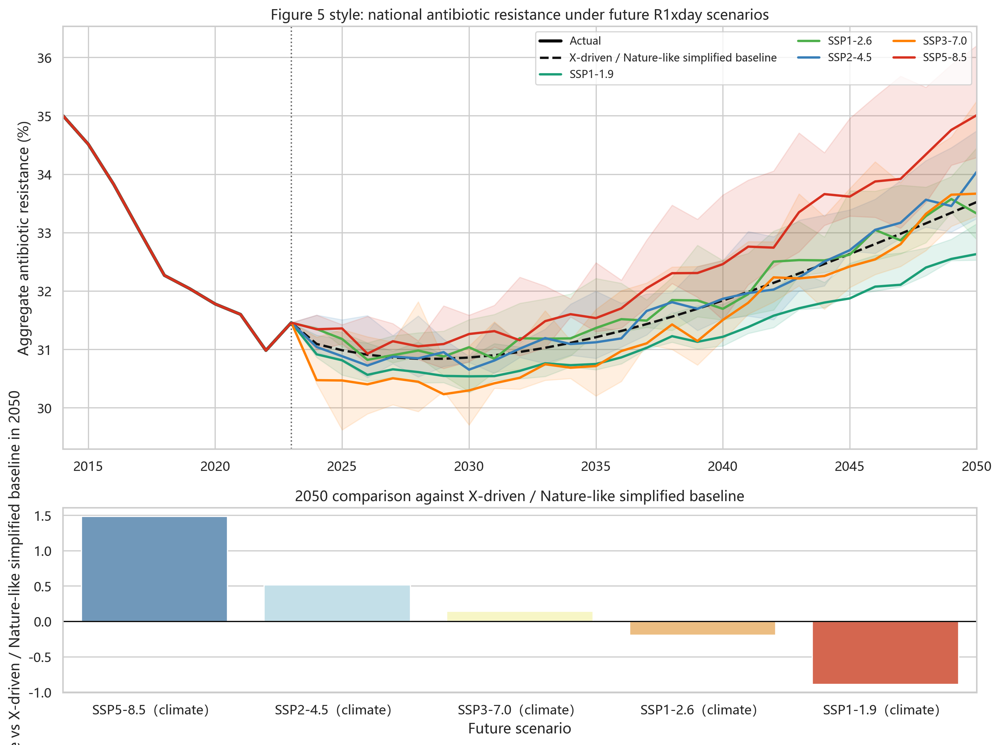
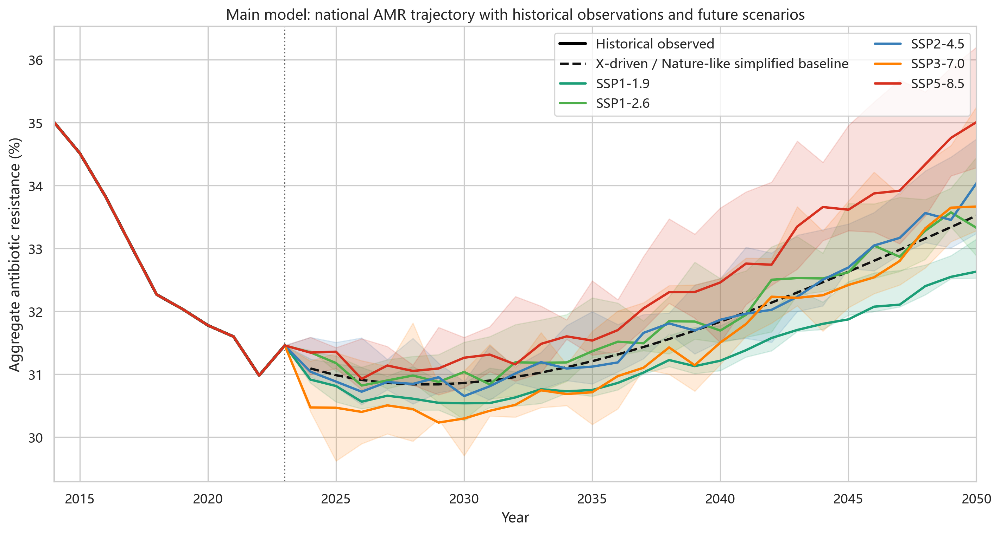
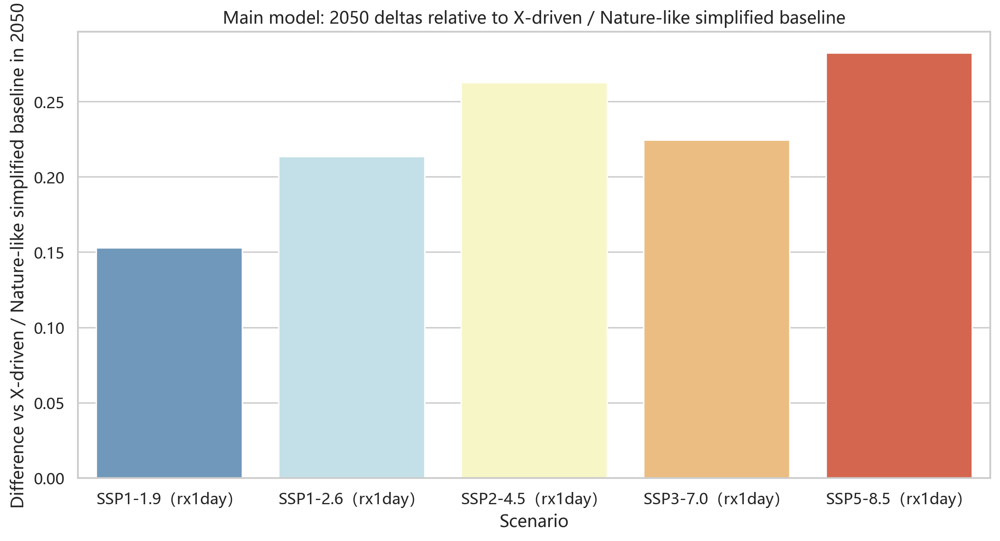
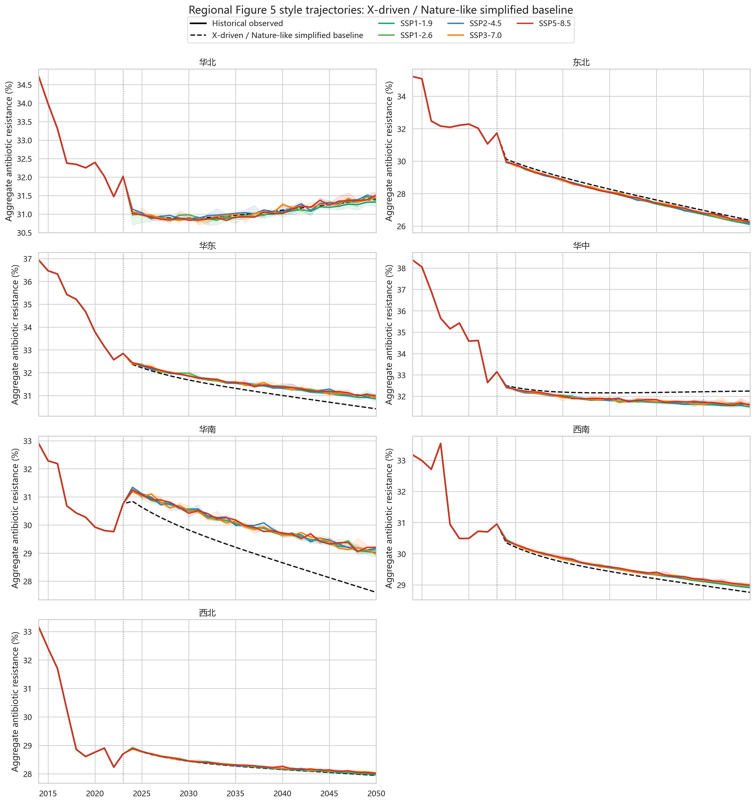
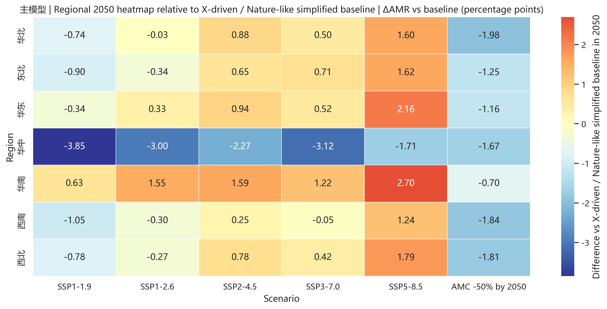
| Region | SSP1-1.9 Δ | SSP5-8.5 Δ | SSP5-8.5 predicted | Province n |
|---|---|---|---|---|
| 华中 Central China |
-0.74 | -0.63 | 31.61 | 3 |
| 东北 Northeast China |
-0.25 | -0.09 | 26.26 | 3 |
| 华北 North China |
-0.08 | +0.07 | 28.02 | 5 |
| 西北 Northwest China |
+0.02 | +0.11 | 31.52 | 5 |
| 西南 Southwest China |
+0.15 | +0.23 | 28.99 | 5 |
| 华东 East China |
+0.43 | +0.58 | 31.00 | 7 |
| 华南 South China |
+1.42 | +1.61 | 29.21 | 3 |
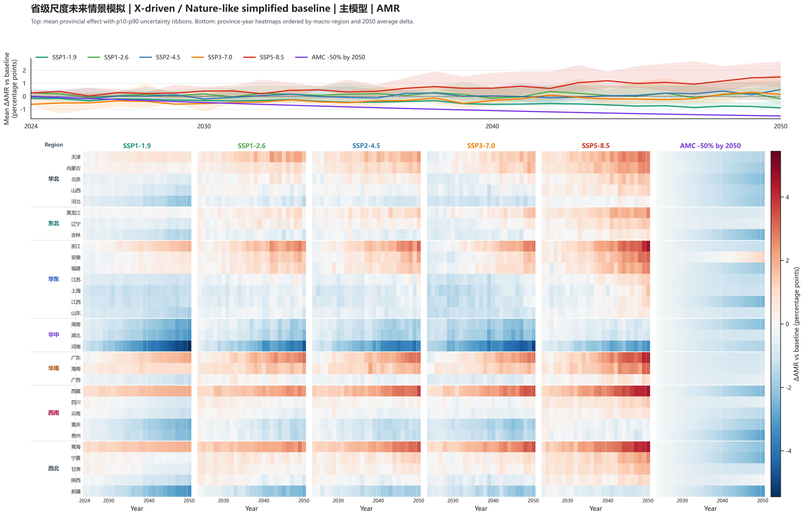
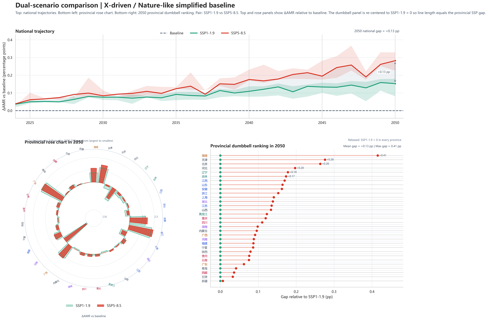
| Province | Region | 2050 predicted | Δ vs baseline | rx1day Δ |
|---|---|---|---|---|
| 浙江 | 华东 | 32.88 | +2.28 | +76.61 |
| 广东 | 华南 | 37.78 | +2.18 | +73.28 |
| 天津 | 华北 | 29.64 | +1.65 | +55.53 |
| 安徽 | 华东 | 24.25 | +1.65 | +55.34 |
| 广西 | 华南 | 25.37 | +1.34 | +44.89 |
| 海南 | 华南 | 24.48 | +1.30 | +43.57 |
| 福建 | 华东 | 29.63 | +0.66 | +22.06 |
| 湖北 | 华中 | 29.65 | +0.33 | +10.91 |
| Province | Region | SSP1-1.9 | SSP5-8.5 | Gap |
|---|---|---|---|---|
| 海南 | 华南 | +0.88 | +1.30 | +0.41 |
| 天津 | 华北 | +1.38 | +1.65 | +0.28 |
| 北京 | 华北 | -0.39 | -0.13 | +0.26 |
| 河北 | 华北 | -1.28 | -1.09 | +0.20 |
| 辽宁 | 东北 | -0.36 | -0.18 | +0.18 |
| 吉林 | 东北 | -0.28 | -0.10 | +0.17 |
| 江西 | 华东 | -0.08 | +0.09 | +0.17 |
| 山东 | 华东 | -0.40 | -0.23 | +0.16 |
这张表直接告诉你两件事：第一，两版的 delta 排序完全一致，说明 scenario ordering 主要由同一套 R1xday 路径决定； 第二，两版的 baseline 与 predicted level 系统性错开，说明主差异来自 baseline 生成口径。
| Scenario | Lancet ETS | X-driven | Lancet uncertainty | ||||
|---|---|---|---|---|---|---|---|
| 2050 baseline | 2050 predicted | Δ vs baseline | 2050 baseline | 2050 predicted | Δ vs baseline | ||
| SSP1-1.9 | 27.21 | 27.36 | +0.15 | 29.42 | 29.57 | +0.15 | +0.18 to +0.08 |
| SSP1-2.6 | 27.21 | 27.42 | +0.21 | 29.42 | 29.63 | +0.21 | +0.21 to +0.21 |
| SSP2-4.5 | 27.21 | 27.47 | +0.26 | 29.42 | 29.68 | +0.26 | +0.22 to +0.31 |
| SSP3-7.0 | 27.21 | 27.43 | +0.22 | 29.42 | 29.65 | +0.22 | +0.19 to +0.24 |
| SSP5-8.5 | 27.21 | 27.49 | +0.28 | 29.42 | 29.70 | +0.28 | +0.23 to +0.33 |
七大区和省级结果都显示出非常明显的空间异质性。当前因为两种 baseline 的 scenario delta 相同，所以空间 pattern 基本一致，差异仍主要体现在 baseline level。
稳健性结果里，主模型和低 VIF 模型几乎重合；systematic 模型更敏感，strict FE 几乎被压平。这和 R1xday 系数完全一致：主模型 0.869、低 VIF 0.873、systematic 1.064，而 strict FE 只有 0.042。
| Role | 2050 baseline | SSP1-1.9 Δ | SSP5-8.5 Δ | Scenario spread | R1xday coef |
|---|---|---|---|---|---|
| 主模型 | 27.21 | +0.15 | +0.28 | +0.129 | +0.869 |
| 稳健性模型 1 | 27.21 | +0.15 | +0.28 | +0.130 | +0.873 |
| 稳健性模型 2 | 27.21 | +0.19 | +0.35 | +0.158 | +1.064 |
| 稳健性模型 3 | 27.21 | +0.01 | +0.01 | +0.006 | +0.042 |
| Role | 2050 baseline | SSP1-1.9 Δ | SSP5-8.5 Δ | Scenario spread | R1xday coef |
|---|---|---|---|---|---|
| 主模型 | 29.42 | +0.15 | +0.28 | +0.129 | +0.869 |
| 稳健性模型 1 | 30.79 | +0.15 | +0.28 | +0.130 | +0.873 |
| 稳健性模型 2 | 32.01 | +0.19 | +0.35 | +0.158 | +1.064 |
| 稳健性模型 3 | 29.45 | +0.01 | +0.01 | +0.006 | +0.042 |
由于当前未来情景只更改 R1xday，所以下面这组模型卡片里最应该盯住的，其实就是各 role 的 R1xday 系数大小； 但其他协变量也一起列出来，方便你写方法时完整交代。
Province: No / Year: Yes
Province: No / Year: Yes
Province: No / Year: Yes
Province: Yes / Year: Yes
图和分析已经全部放在正文里了。下面只保留你在复核、补图或写方法时真正会用到的说明和文件入口，不再把“打开文件”当成正文阅读流程的一部分。
{kind=link}
{kind=link}
{kind=link}
{kind=link}
{kind=link}